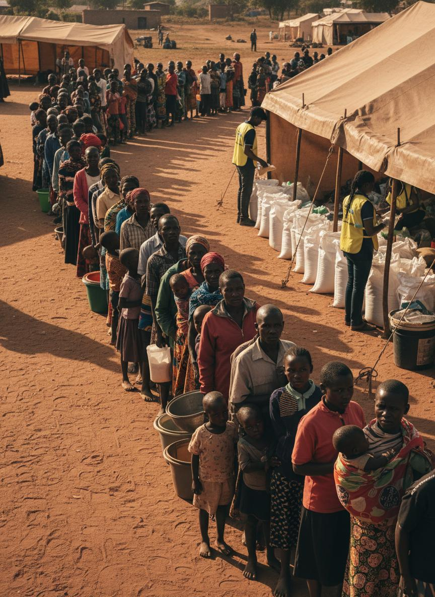

$25
Can help provide essential food support to a vulnerable household.

Fuel dignified, life-changing support for vulnerable families through trusted, transparent giving.
Your donation helps us sustain food relief, seasonal assistance, and long-term empowerment programs.
Can help provide essential food support to a vulnerable household.
Can support multiple meal distributions during high-need campaign periods.
Can strengthen coordinated outreach through logistics and volunteer operations.
Builds predictable support so families can rely on timely, consistent assistance.
100% of public donations support program delivery and outreach operations.
Exchange rate: 1 USD = 130 KES
We treat donor data responsibly and prioritize financial accountability.
Your generosity helps Anwaar Foundation deliver relief, dignity, and long-term resilience where it is needed most.